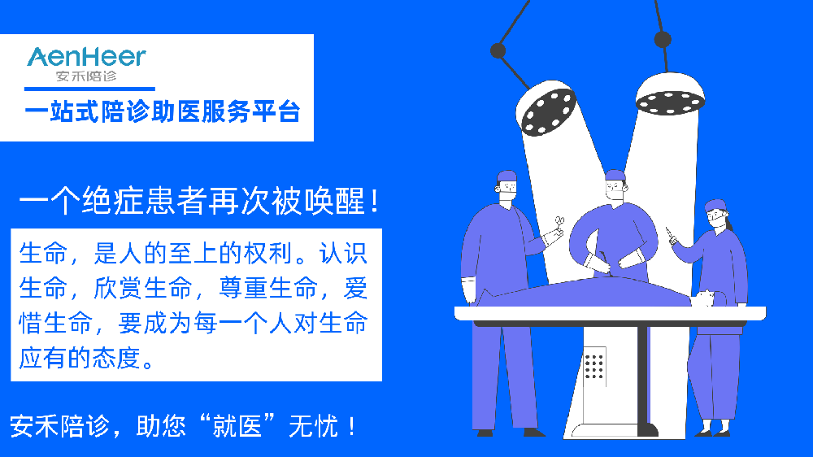
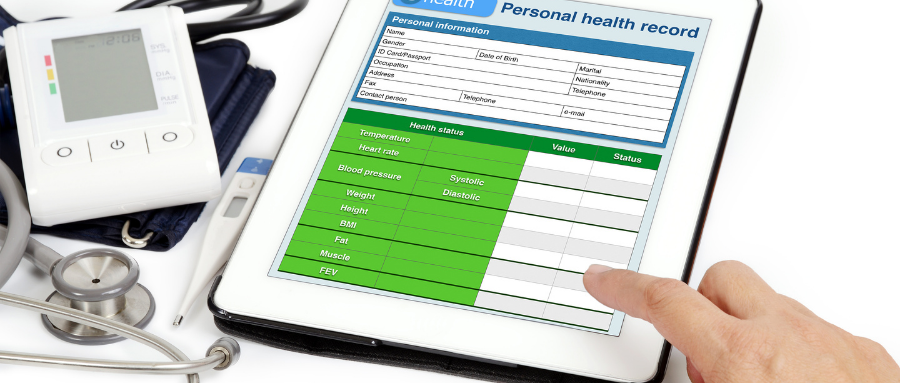

陪诊案例
-

2022-11-11
一个绝症患者被再次唤醒
-
2023-05-08
北京大学第一医院陪诊|肾内科|高血压肾炎|北京陪诊
高血压肾病一、基本简介高血压肾病系原发性高血压引起的良性小动脉肾硬化（又称高血压肾小动脉硬化）和恶性肾小动脉硬化并伴有相应临床表现的高血压病及肾功能衰竭。多有常年高血压病史，肾小管的损害多早于肾小球，···
-
2023-05-09
中国人民解放军总医院301医院陪诊|消化内科|浅表性胃炎|北京陪诊
浅表性胃炎是慢性胃炎的一种，属于临床上的常见病和多发病。胃镜普查证实，我国人群中慢性胃炎的发病率高达60%以上，所以当有上腹部胀闷、嗳气、吐酸、食欲减退，或无规律上腹隐痛，食后加重等诸多表现时，需要及早就···
-
2023-05-09
中国医学科学院阜外医院陪诊|心内科|心律失常|北京陪诊
窦性心律失常(sinus arrhythmia)系窦房结发出的激动显著不规律，使心房和心室的节律也不规则。包括窦性心动过速、窦性心动过缓、窦性心律不齐、窦房结折返性心动过速、窦性停搏、窦房传导阻滞及病态窦房结综合征等类···
-
2023-05-11
首都医科大学附属北京朝阳医院|呼吸内科|睡眠呼吸障碍|北京陪诊
随着我国老龄化的不断加剧，前往医院就诊的人数不断增加，能陪伴老人一起就医的子女，很多都是请假前往，子女无法陪同父母前往就医的现象逐渐增加。作为伊戎专业的陪诊员，就是代替请假不方便、孩子在外地工作的人群···
-
 2023-05-13
2023-05-13
北京大学第一医院陪诊|皮肤科|荨麻疹|北京陪诊
荨麻疹（urticaria）是一种血管皮肤反应，典型表现为短暂的发痒的水疤暴发，水疤为边界清晰、中心苍白、光滑、轻度高出皮面的红斑，形状及大小表现多样。此反应是由局部组胺或高敏反应引起的其他血管活性物质的释放引···
-
2023-05-13
天津第四中心医院陪诊|心血管内科|心肌梗塞|天津陪诊
现在很多的空巢老人都面临这样的情况，儿女不在身边，生病无人照顾，如果都因为突发情况多、风险高而不去服务这样的患者，那么“陪诊”这一行业的意义就是不完整的。我想只要我们在陪诊的过程中更加细心，周到，并且···
-

2023-05-14
中日友好医院陪诊|呼吸内科|肺心病|北京陪诊
我是伊戎陪诊的专职陪诊员，陪诊的经历发现“一些上了年纪的病人腿脚都不方便，自己排队的话要很久。而且医院采取网上预约挂号，他们弄不明白网上挂号如何操作，跑到医院发现已经没号了，白跑一趟。还有外地来的病人···
-
2023-05-15
北京协和医院陪诊|风湿免疫科|类风湿关节炎|北京陪诊
今天陪诊的老人是从云南来北京就医的，她的孩子有时无法陪伴，便通过微信小程序找到了“伊戎陪诊”，并嘱咐我不要和他母亲说是陪诊师，就说是她的朋友。我依约到火车站接上老人，老人由于风湿病（类风湿关节炎）腿脚···
-
2023-05-16
北京协和医院陪诊|普外科|结直肠癌|北京陪诊
我是伊戎陪诊的专职陪诊员，上周三接到张先生的电话，张先生的老爹患有结肠直肠癌，病的比较重，可能需要手术，老爹行动不便，希望我去北京协和医院陪同老爹做检查并办理住院手续。今天一早7点50，我来到医院帮助老人···